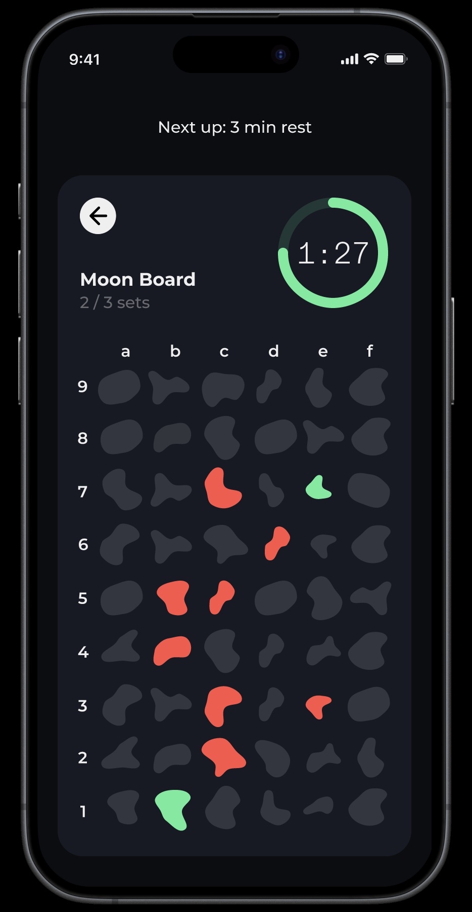
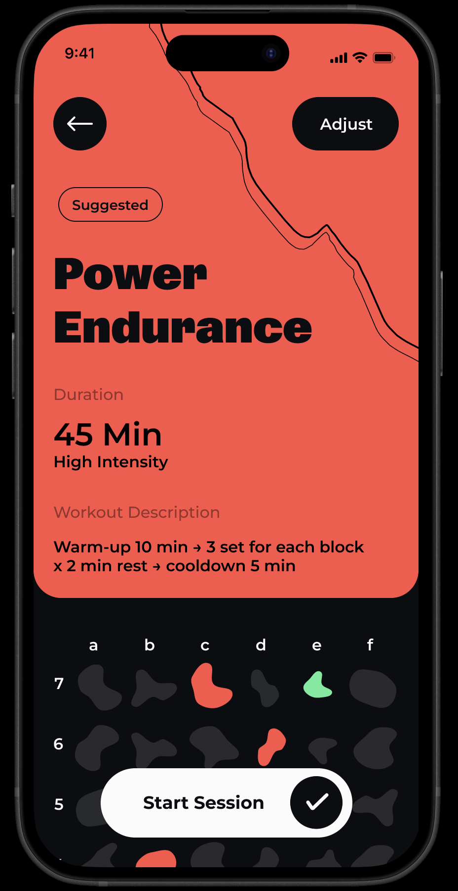

REACH
My Role
Product Design
UX/UI
Branding
An AI-powered training app that builds Personalized MoonBoard workouts for professional bouldering climbers based on their goals & body sensations.
“It’s a Startup!” course, Bezalel, 2025
in collaboration with Itay Ben Mayor
The Problem
Unlike running or weightlifting, Bouldering has no established training methods. One climber I interviewed had hit a plateau, and was unsure what to do beyond trying other climbing routes. He knew the MoonBoard could be helpful, but not how to use it to reach his personal goals.


Decision 1
Most training apps are built to record and log workouts. We started there too, designing around recording and self-filming. But for climbing, that wasn’t enough. We wanted Reach to not just track progress, but create it. Reach generates each workout, learns the climber over time, and uses what they log about their body to shape the next one.